01 / EUROPA
O clássico
dos Alpes.
A maior seleção, nos Alpes franceses e na Suíça, com estações como Val d'Isère, Tignes, La Rosière e Alpe d'Huez, além de Saint-Moritz. Neve de dezembro a maio.
FRANÇA ✦ SUÍÇA
Uma semana de neve cinco estrelas com a sua família, com até 20% de desconto.
Resorts de esqui na Europa, Canadá e Ásia, com tudo incluído. Quatro dias de venda, de 22 a 25 de setembro, e vagas contadas.
Quero garantir minha semana de neve01 / PRA QUEM É
Essa viagem é pra família que sempre quis viver a neve de verdade. Esquiar de manhã, almoçar na montanha, ver os filhos aprendendo a descer a pista com segurança e terminar o dia num resort cinco estrelas sem se preocupar com nada.
Não é a viagem mais barata, e não quer ser. É a viagem que a sua família vai lembrar pra sempre.
Se isso combina com vocês, continua lendo.
02 / O QUE VOCÊ VAI VIVER
No Club Med, neve não é só esporte. É uma semana inteira pensada pra família não se preocupar com absolutamente nada.
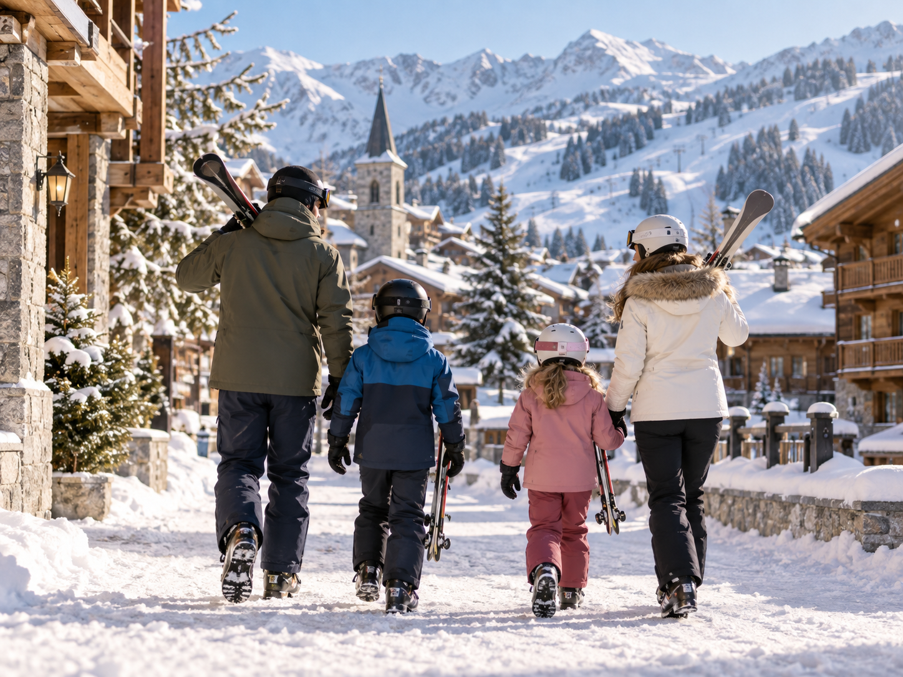
Tudo está incluído. A hospedagem no resort cinco estrelas, todas as refeições e bebidas, e as aulas de esqui e snowboard pra família toda, do seu filho pequeno ao adulto que nunca calçou um esqui na vida. Instrutores certificados, equipamento, e turmas por nível.
Você chega, tira as malas do carro e a viagem já começa resolvida. Enquanto as crianças aproveitam as atividades por faixa de idade, você esquia, relaxa no spa ou só admira a montanha. À noite, a vila inteira se junta pra jantar, e o dia seguinte já vem pronto.
É o tipo de viagem que não dá trabalho nenhum e vira a história favorita da família por anos.
Família, pistas, resorts e experiências que fazem parte de uma semana inesquecível na neve.
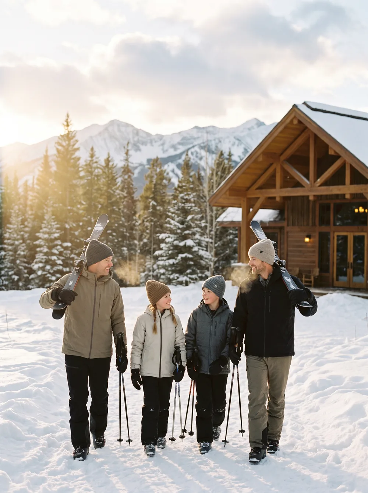
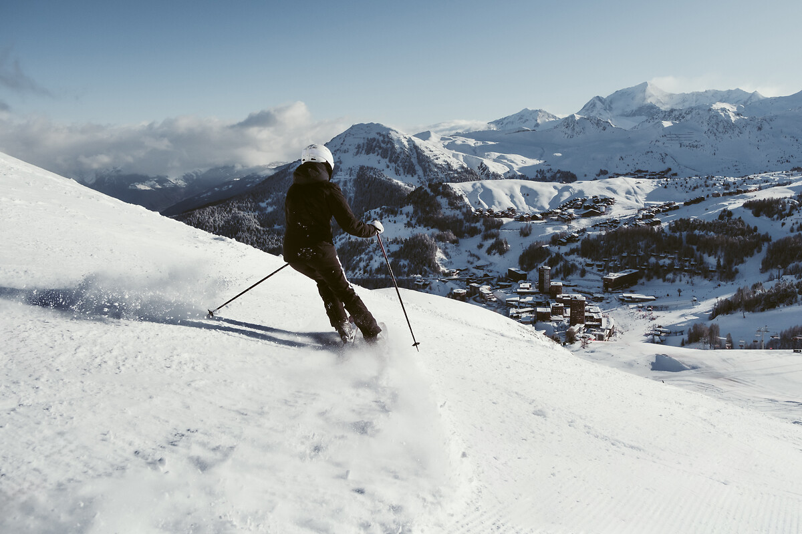
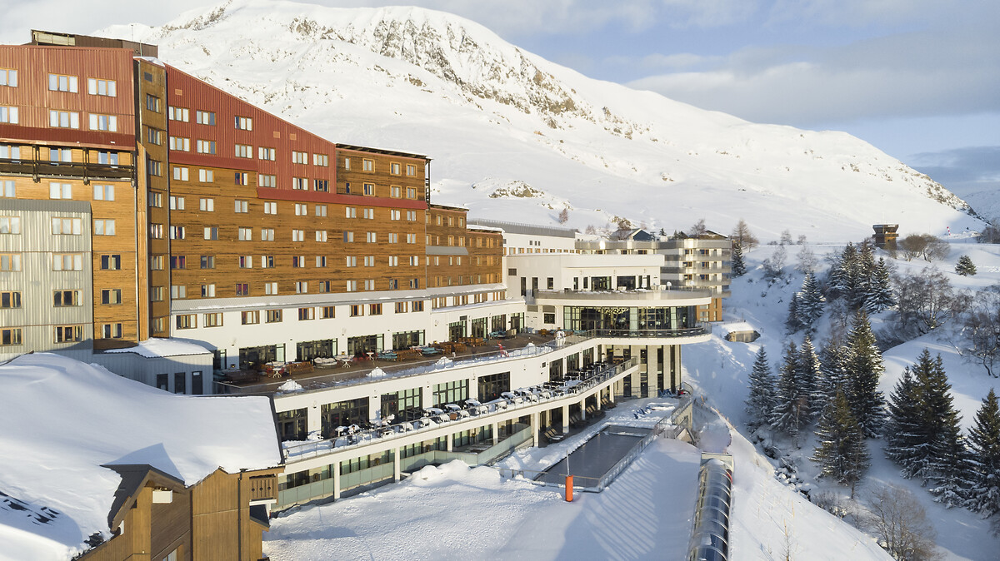
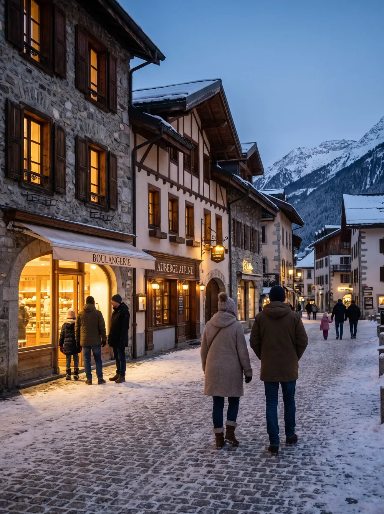
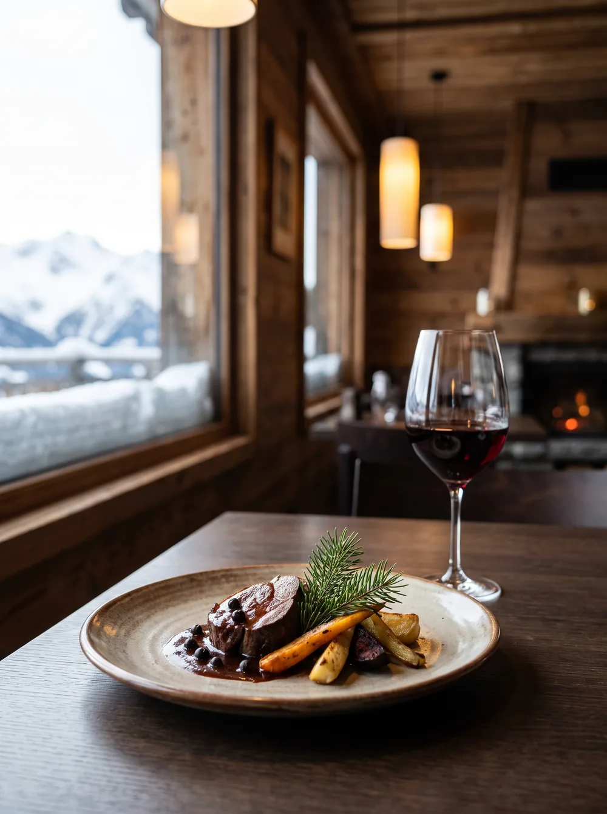
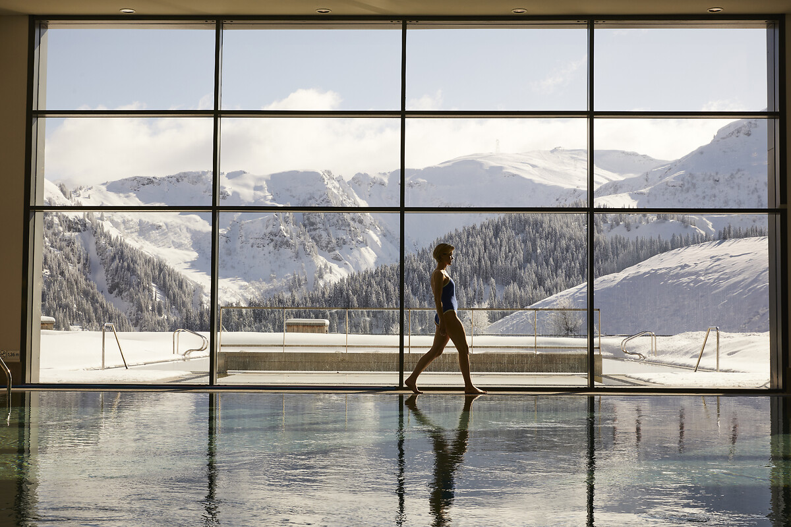
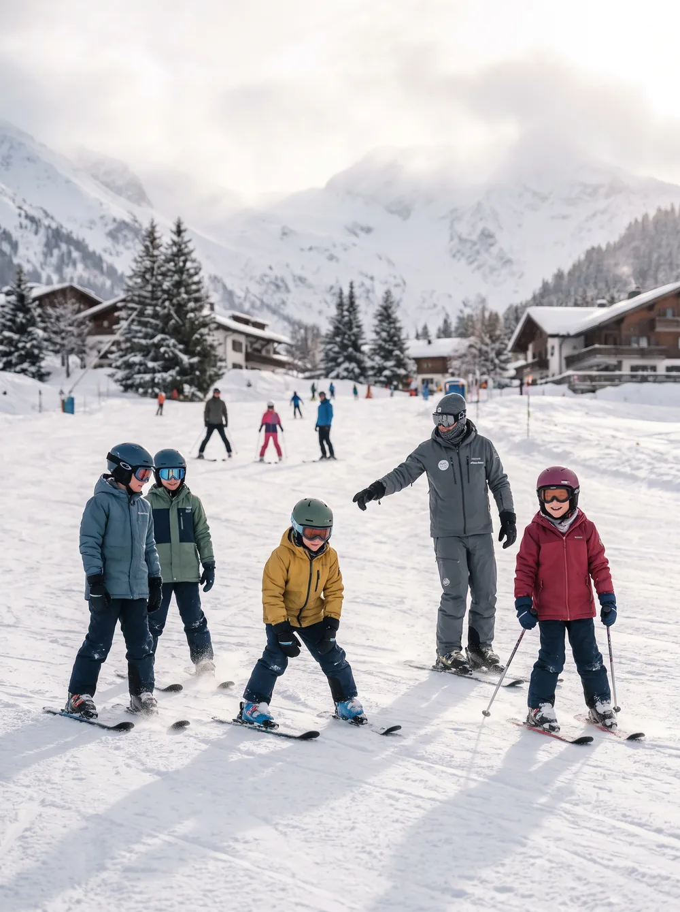
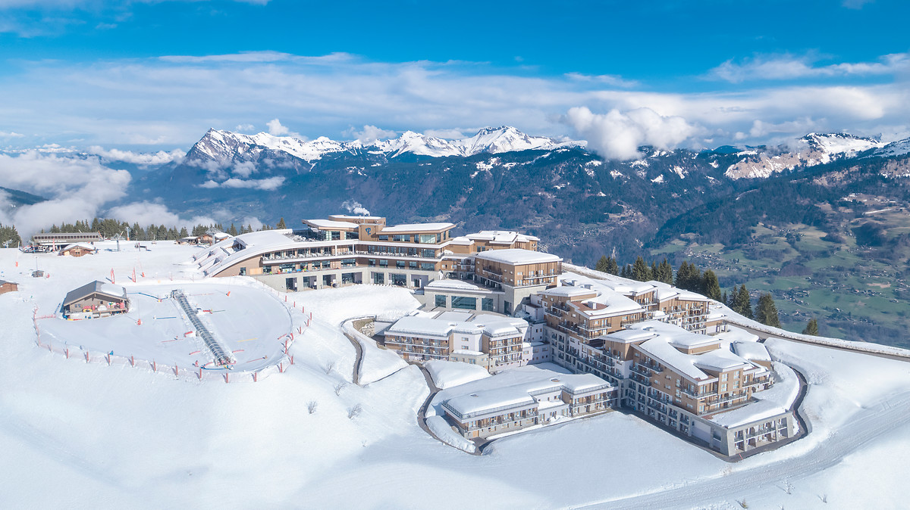
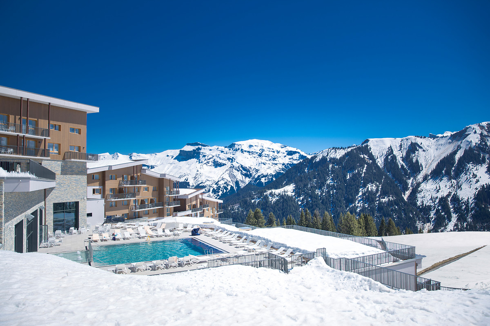
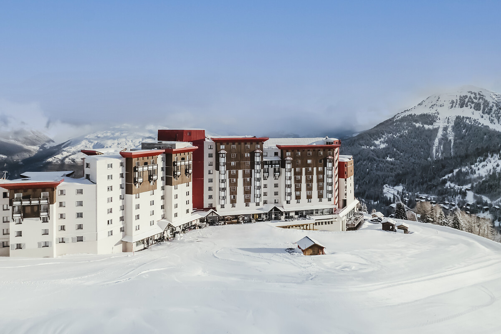
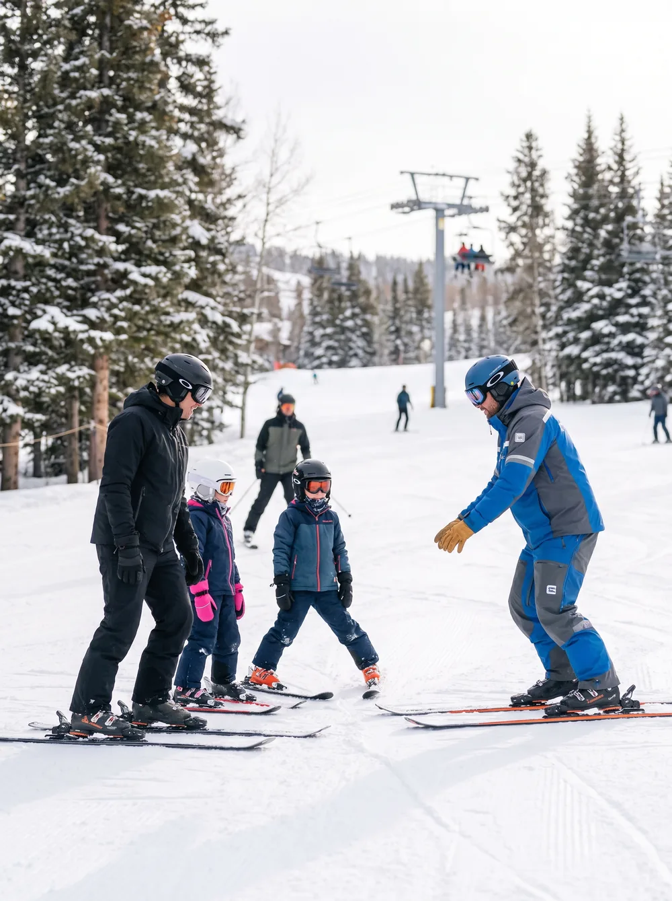
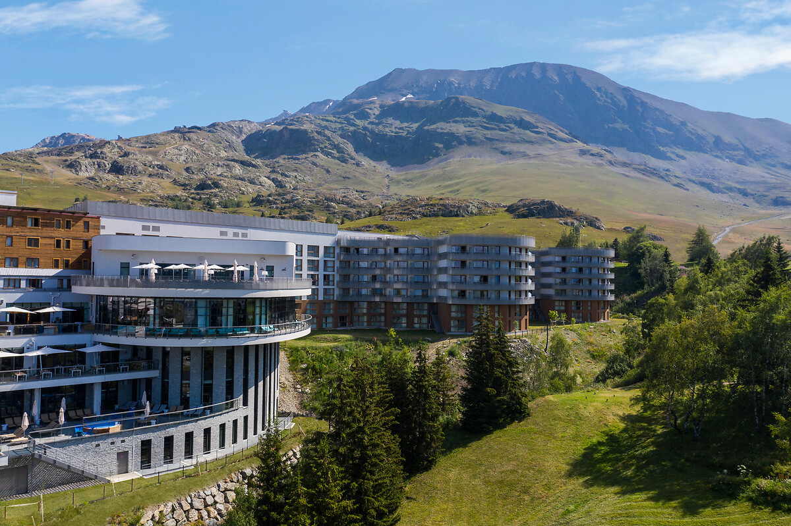
03 / OS DESTINOS
A campanha cobre resorts de neve em três regiões, todos Club Med Premium All Inclusive.
A maior seleção, nos Alpes franceses e na Suíça, com estações como Val d'Isère, Tignes, La Rosière e Alpe d'Huez, além de Saint-Moritz. Neve de dezembro a maio.
Quebec Charlevoix, para quem quer a experiência da neve norte-americana.
Os resorts de Hokkaido, no Japão, conhecidos pela neve considerada uma das melhores do mundo.
Cada destino tem perfil e clima diferente. Na conversa pelo WhatsApp eu te ajudo a escolher o que mais combina com a sua família e com o mês que vocês querem viajar.
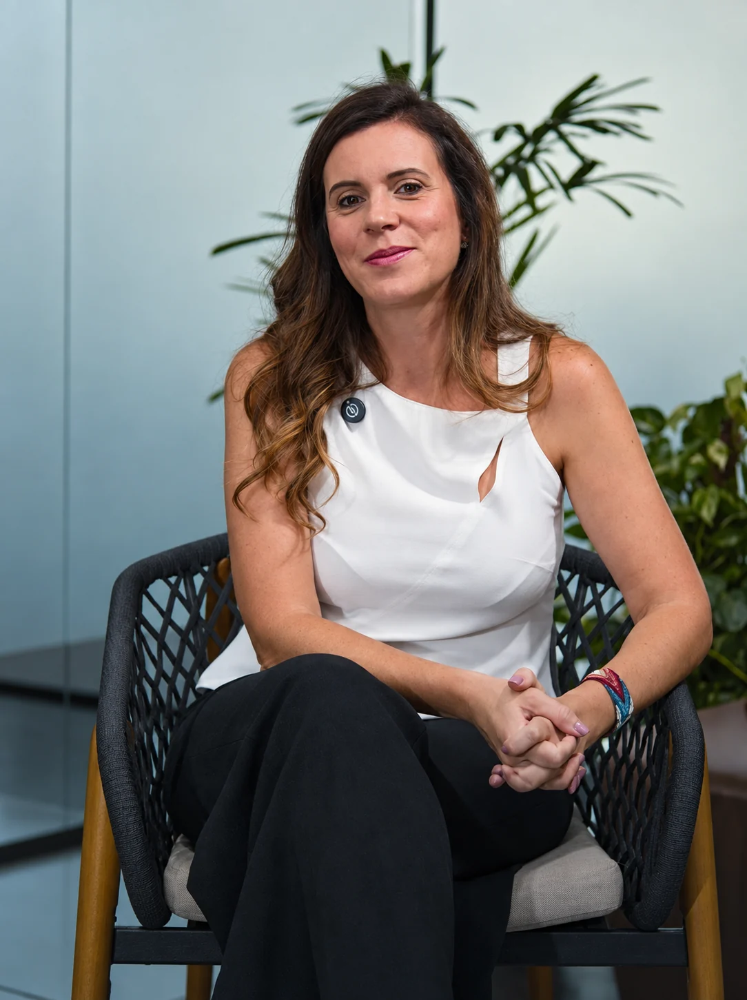
04 / QUEM VAI CUIDAR DA SUA VIAGEM
Eu sou a Denise, fundadora da Travel Made.
São mais de 15 anos no turismo e 27 países visitados. Não indico resort que li sobre. Indico o que eu conheço, o que já vendi e o que já vi cliente meu voltar encantado.
Vendo Club Med de neve há dois anos e faço treinamento a cada temporada pra estar por dentro de cada detalhe de cada resort. Quando você fala comigo, fala com quem sabe qual estação combina com o perfil da sua família, qual semana vale mais a pena e o que ninguém te conta antes de fechar.
Meu atendimento é próximo e humano do começo ao fim. Antes de embarcar, planejando cada detalhe com você. Durante a viagem, do outro lado do WhatsApp pra qualquer coisa que você precisar.
Conversar com a Denise05 / POR QUE COM A TRAVEL MADE
Você até consegue procurar sozinha num site. Mas o Club Med Neve tem detalhes que, se você errar, custam caro e não têm segunda chance.
As datas de entrada e saída são fixas, o pacote é de sete diárias, e cada resort tem regras próprias de aula e de estrutura pra criança. Escolher o resort errado pro perfil da sua família, ou a semana errada, transforma a viagem dos sonhos em frustração.
Eu resolvo isso pra você. Escolho o resort certo, encaixo as datas, monto a viagem inteira em volta da semana de neve, o aéreo, os dias antes e depois, e cuido de tudo até você voltar pra casa. Você vive a viagem. Eu cuido do resto.
E nessa campanha, ainda com até 20% de desconto sobre o valor do pacote.
06 / POR QUE AGORA
Essa é uma janela curta e real.
A venda acontece só de 22 a 25 de setembro. O desconto de até 20% vale sobre pacotes com cota limitada de quartos por resort, e a promoção acontece no mundo inteiro ao mesmo tempo. Quando a cota de um resort fecha, não abre quarto novo na promoção.
Quem decide rápido garante a melhor semana pelo menor valor. Quem deixa pra depois corre o risco de encontrar o resort dos sonhos já esgotado.
Por isso vale conversar antes da venda abrir. Assim, no dia 22, a sua reserva é uma das primeiras.
Quero falar com a Denise antes das vagas fecharem07 / PERGUNTAS FREQUENTES
O que você precisa saber para escolher sua semana de neve com segurança.
O pacote é de sete diárias, com datas fixas de entrada e saída definidas por cada resort. Isso porque as aulas de esqui e as atividades seguem um calendário semanal. Na conversa pelo WhatsApp eu te mostro as semanas disponíveis pro destino que você escolher.
Hospedagem no resort cinco estrelas, todas as refeições e bebidas, e as aulas de esqui e snowboard com instrutores certificados. O desconto da campanha é sobre esse pacote de hospedagem. Aéreo, transfers e taxas não entram no desconto, mas eu cuido de tudo isso junto com você.
Serve, e é um dos melhores lugares pra começar. As aulas são divididas por nível, do iniciante ao avançado, e existem turmas específicas pra cada faixa de idade das crianças. A família toda aprende junto, cada um no seu ritmo.
Tem. Os resorts têm clubes por faixa de idade, do bebê ao adolescente, com atividades supervisionadas. As condições variam por resort e a gente confirma isso antes de fechar.
Europa (Alpes franceses, Suíça), Canadá (Quebec) e Ásia (Japão). Cada um tem clima e perfil diferente, e eu te ajudo a escolher na conversa.
Dá. O pagamento pode ser parcelado em até 8 vezes no cartão. Os detalhes a gente vê juntos no atendimento.
O Club Med tem regras específicas de cancelamento que variam conforme a antecedência. Eu te explico tudo com clareza antes de qualquer decisão, pra você fechar com segurança.
Porque a venda dura só quatro dias e as cotas com desconto são limitadas por resort. Falando comigo antes, a gente já deixa sua opção mapeada pra garantir assim que a venda abrir.
A SUA PRÓXIMA HISTÓRIA COMEÇA AQUI
São só quatro dias de venda e as vagas com desconto são poucas. Me chama no WhatsApp, me conta quantos são e o mês que vocês sonham viajar, e eu monto a semana de neve perfeita pra vocês antes das cotas fecharem.
Falar com a Denise no WhatsApp